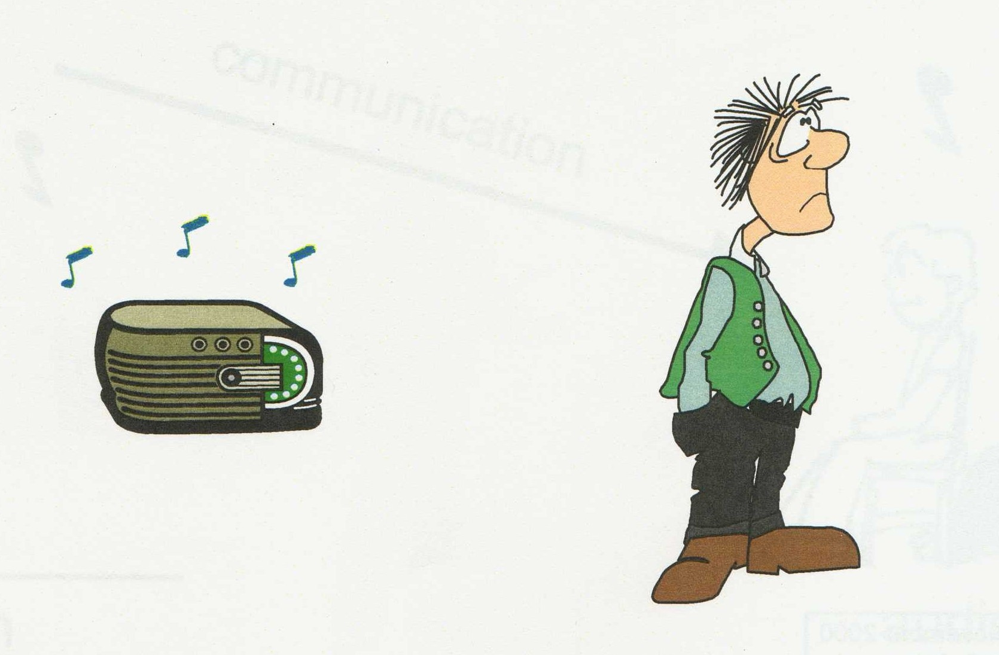

Музыка передает людям различные чувства и эмоции. Когда вы слышите медленную и грустную музыку, она вызывает у вас чувство грусти.
Историки пришли к выводу, что музыка должна была присутствовать у первых людей в Африке. Предполагается, что после возникновения в Африке музыка существует по крайней мере 50 000 лет.
Согласно Энциклопедическому словарю Брокгауза и Евфрона, сольфеджио — начальные вокальные упражнения в чтении нот без текста. При пении мелодии сольфеджио каждая её нота называется. Сольфеджио как упражнения располагаются в сборнике с постепенным переходом от более лёгких к более трудным. Сольфеджио пишутся во всех мажорных и минорных тональностях и во всех ключах для разных голосов, как женских, так и мужских. Преимущественно пишутся сольфеджио одноголосные, но бывают двух- и трёхголосные, цель которых состоит в приучении поющего петь самостоятельно свою партию, не сбиваясь вследствие исполнения остальных партий другими голосами. В консерваториях на сольфеджио обращается особое внимание как на вернейший способ развития слуха и способности быстро и без ошибок читать музыкальную нотацию.